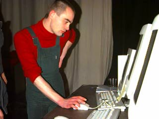
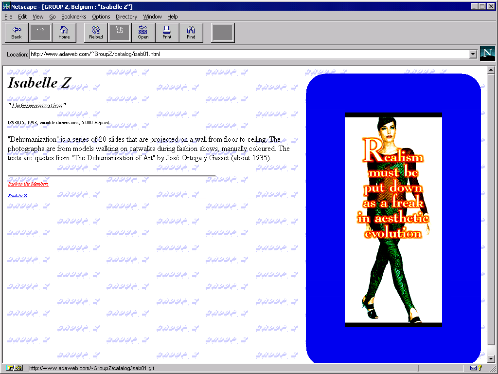
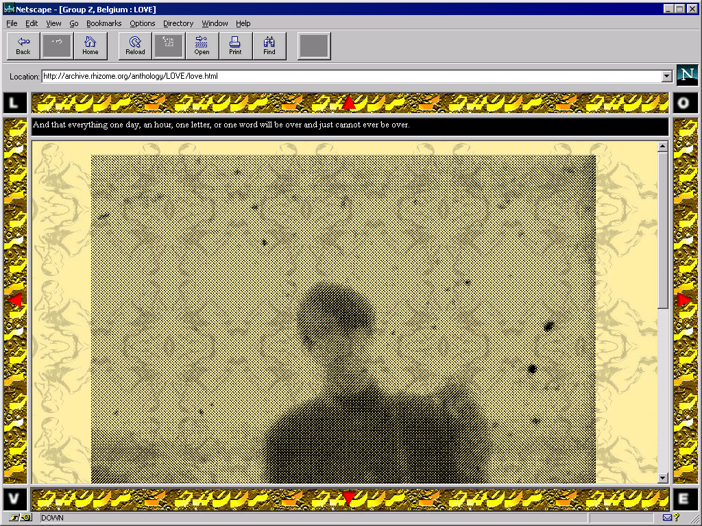
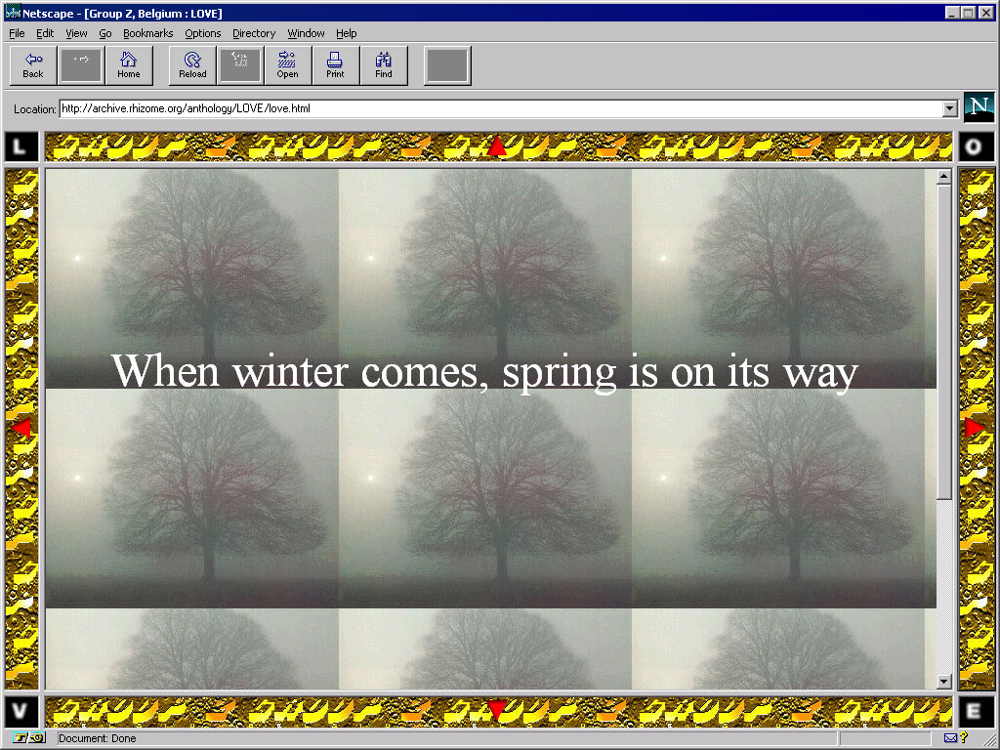
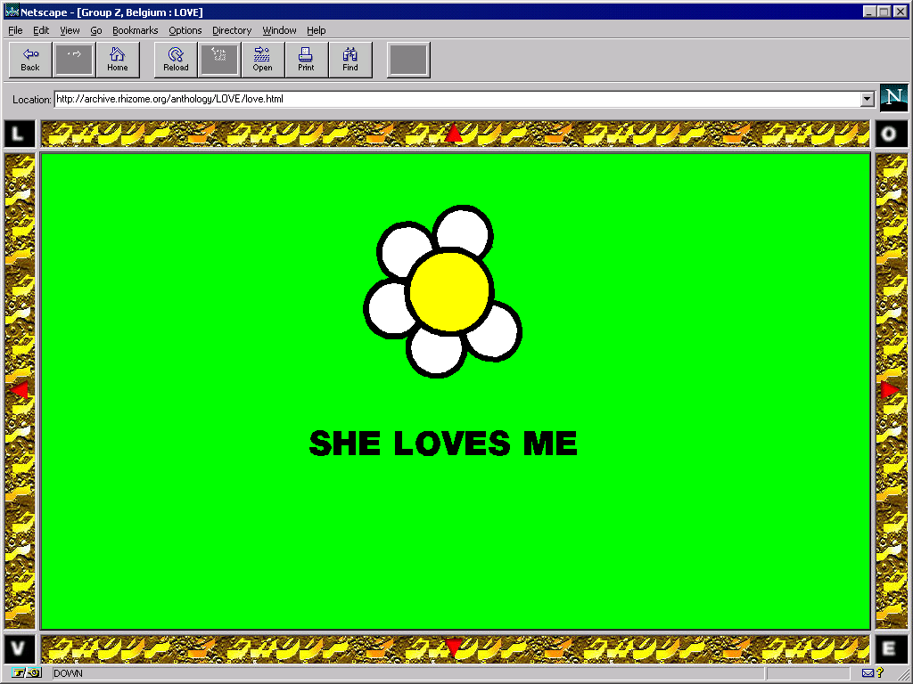
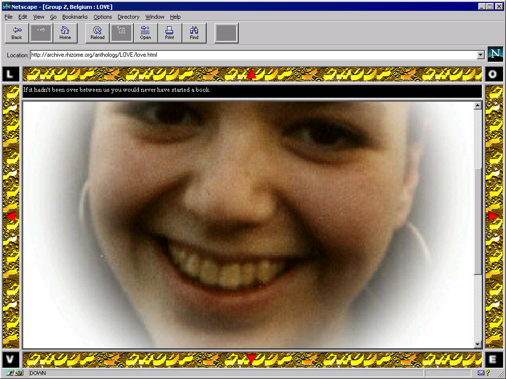
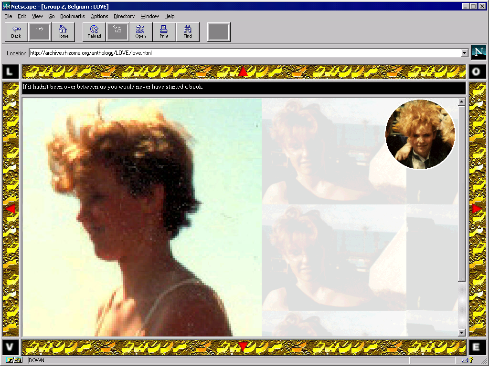
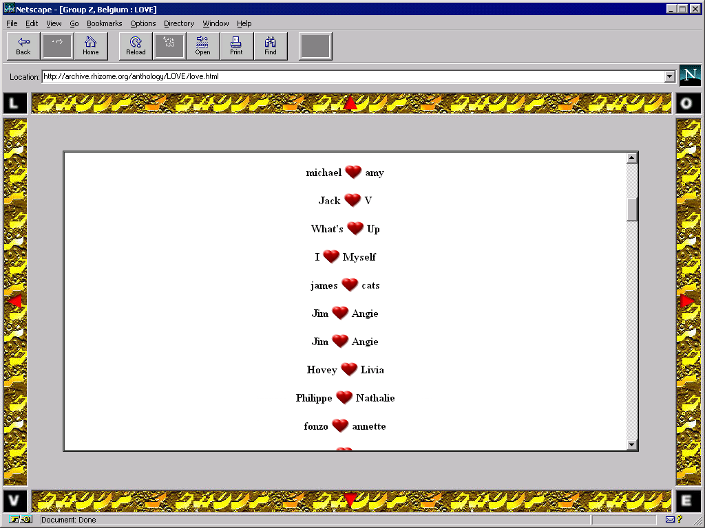
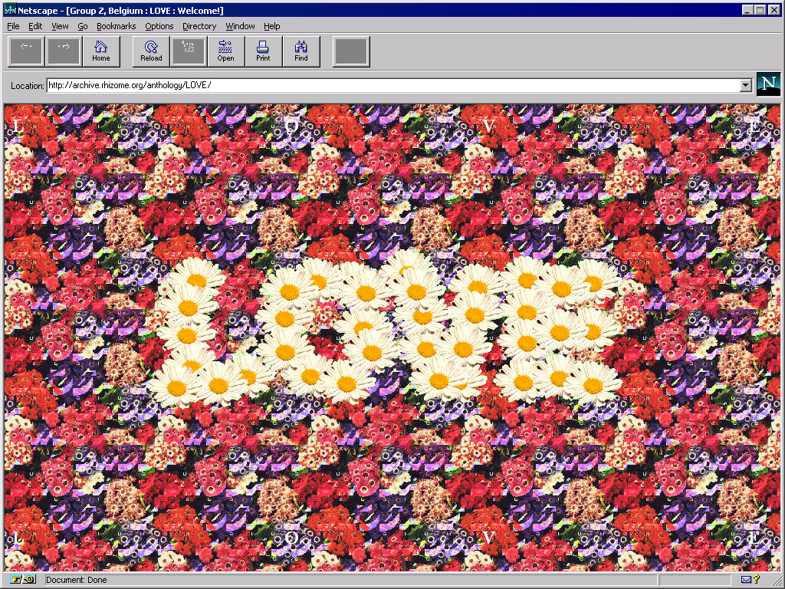
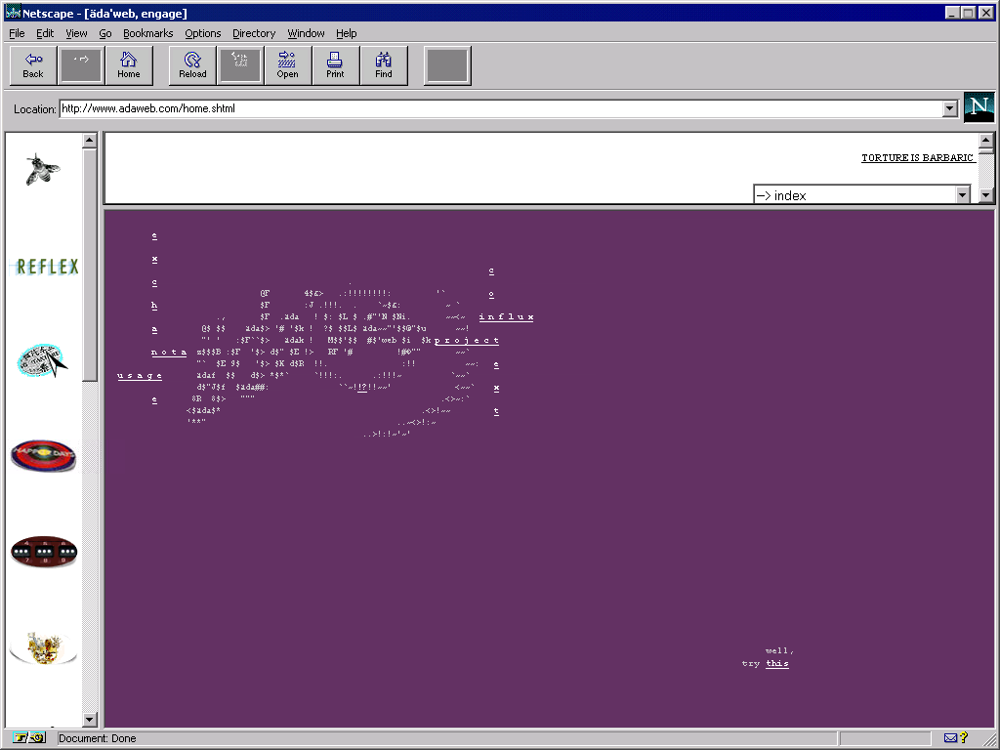

Developed for Netscape 2, LOVE is a series of seven stories arranged in a navigable grid of HTML files. Images, text, and interactive compositions map a range of experiences associated with romantic love, from innocent longing to polymorphous perversion to bitter loss. The user navigates the work via a nonlinear path, but the work retains a loose narrative arc nevertheless.
With its lyrical, expressive vignettes arranged in a precise grid, LOVE exemplifies the structural possibilities afforded by the web. In a seeming paradox, the standardization that is characteristic of the computer and the network continuously opens up new spaces for improvisation and experimentation, for emotional experience, and for artistic play.
Note: this work includes some explicit imagery.

Michaël Samyn, 1995.
Group Z, Belgium was a fictional collective made up of Michaël Samyn and nine of his artistic alter egos. Before he began to work online, Samyn created “analog” works and attributed them to to these identities as a way of exploring distinct styles and practices. With LOVE, Samyn's avatars are credited as co-authors, even though the work draws heavily on his personal biography.

Screenshot of website showing bio for Isabelle Z, member of Group Z, Belgium.

While many projects on the early web made sparing use of images to reduce download times, LOVE is a highly visual affair. Samyn kept image sizes small, using layering and transparency to lend depth and richness. For example, one composition layers a monochromatic, semi-transparent GIF over a small, tiled background image.

The grid of pages in LOVE can be thought of as a kind of basic database, from which the user can construct their own narrative through navigation. Navigation is spatialized, with the user clicking on arrows to move up, down, left, or right, as if moving through a videogame landscape.
“THE NET IS A VERY INTIMATE MEDIUM. PROBABLY BECAUSE COMMUNICATION IS ALWAYS ONE TO ONE: THERE'S ALWAYS ONE USER IN FRONT OF HIS OR HER COMPUTER LOOKING AT ONE PAGE.”
— MICHAËL SAMYN

Though the user may take a nonlinear pathway through the work, most pathways begin with an interactive flower and concludes with the final frame of a cinematic love story.

The work draws on Samyn's own experiences, including snippets of letters from past relationships. In the text accompanying the initial piece, Samyn was careful to point out that although the work aimed to address the topic of “love” in a general sense, it did so from a particular, heterosexual point of view.

Samyn was an avid image collector even before the advent of the web, with drawers full of found imagery that he reused in his work. The images in LOVE were mostly scanned in from magazines or drawn by hand; some may have been taken from pornographic CD-ROMs.

The work also includes a participatory feature in which users could enter their names, which would be displayed in a long list. “It is sort of like an old tree in which you can carve your name and the name of the one you love,” the site explained.
“WHEN WE STARTED, PEOPLE HAD THEIR OWN COMPUTERS AND WE WERE HAPPY THAT WE COULD LOG IN AND ACTUALLY HAVE ACCESS TO THE INTERNET. BUT TO HAVE A SERVER—THAT WAS SPECIAL.”
— MICHAËL SAMYN

LOVE was published as part of äda'web, a massive net art “research & development” project founded in 1994, which was curated by Benjamin Weil and designed by Vivian Selbo. Taking its name from Lady Ada Augusta Lovelace, who many consider the first computer programmer, äda'web was hosted by the Walker Center and itself included a huge number of browser-based projects by artists from a wide range of disciplines.

Screenshot of äda'web. äda'web gave Samyn free hosting for his project, and did not exercise censorship over the work, even though the Communications Decency Act exposed them to potential legal penalties for hosting sexually explicit imagery.